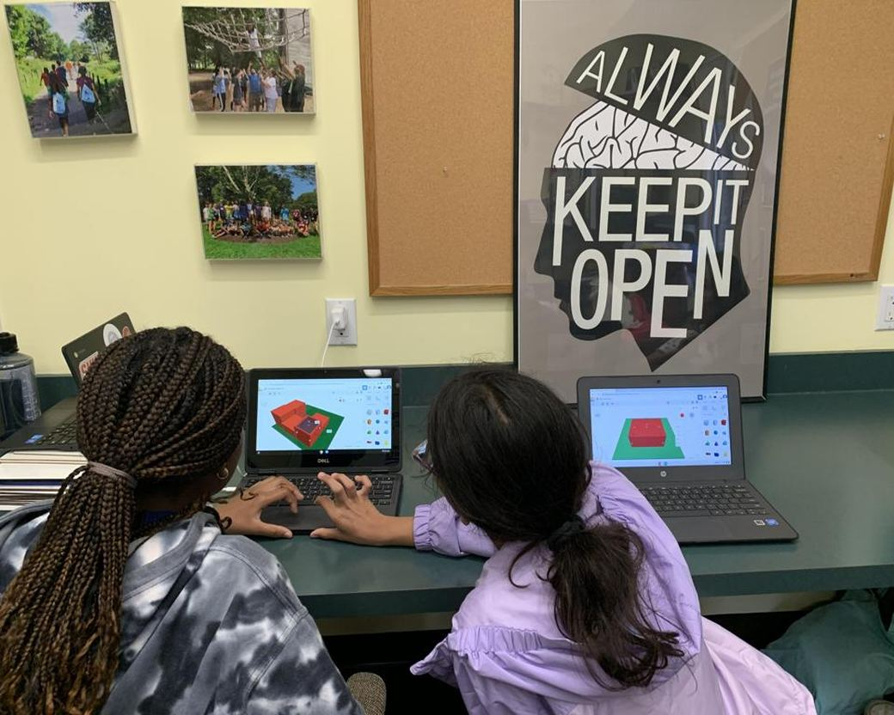
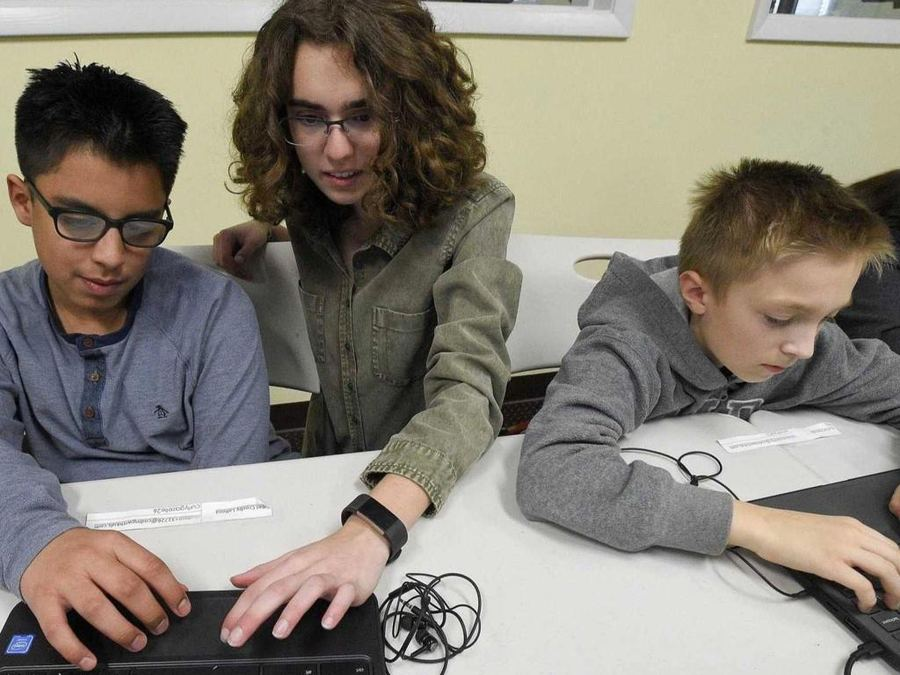
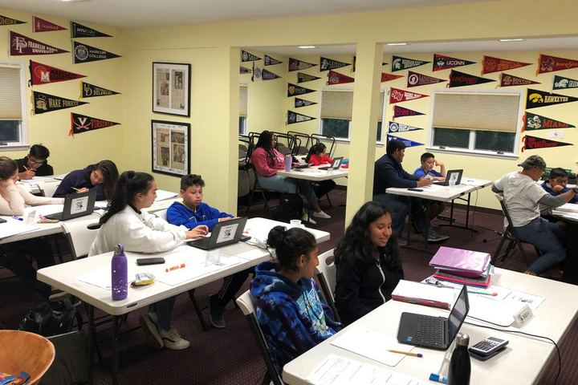
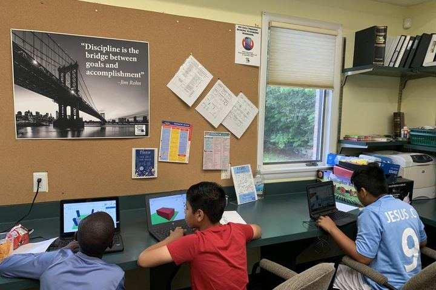
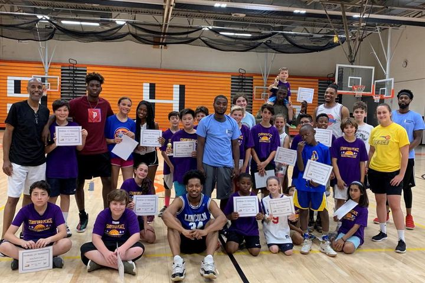

01
Peer-Powered Learning
Our student-to-student informal mentoring model builds confidence, connection, and mutual growth for tutors and learners alike.
Highly subsidized one on one tutoring and informal mentoring for students in grades 4 to 10, in lower Fairfield County.

Launched in 2014 as a program of the Stamford Peace Youth Foundation, the Beyond Limits Academic Program provides highly subsidized one on one tutoring and informal mentoring to students attending Stamford Public Schools and other schools in lower Fairfield County. Tutoring is typically conducted by upperclassmen, many of whom are referred by teachers, administrators and other tutors. We also have a number of college students around the world working with us.
Sessions are held at our center on Long Ridge Road.
See the full tutoring details
To create an equitable academic ecosystem in lower Fairfield County and beyond by empowering every learner through tutoring, informal mentoring, advocacy, and collaboration with local partners.
Beyond Limits' mission is to level the academic playing field and eliminate opportunity gaps for learners in lower Fairfield County. We empower every learner to achieve their potential through high-quality, subsidized, non-school-based peer-to-peer tutoring, mentoring, academic advocacy, and enrichment activities. By collaborating with local partners, we create a sustainable, inclusive academic support network that fosters a thirst for knowledge and equitable access to opportunities.
Beyond Limits is not only a tutoring service. It is a system in which older students are trained, paid and trusted to teach younger ones, so a single investment produces academic gains for one student and a first professional experience for another.

01
Peer-Powered Learning
Our student-to-student informal mentoring model builds confidence, connection, and mutual growth for tutors and learners alike.
02
Youth Employment & Leadership
Tutoring offers a flexible first job or volunteer role, giving youth valuable work experience, responsibility, and leadership skills.
03
Mission-Driven Equity
We are committed to closing the opportunity gap through subsidized access and long-term investment in student success.
04
Community-Centered Impact
We engage families and local community partners to ensure students thrive in and out of school.
05
Holistic Growth
We actively engage students to be their best selves in every way.



Year round
Peer Tutoring
One on one math and science, generally twice a week.
Mentoring
Informal mentoring built into every pairing.
Educational Advocacy
We work with parents, teachers and administrators as shared advocates for our students.
Summer programmes
Middle School Summer Scholars
A one week program for incoming 6th graders.
High School Preparatory Academy
A one week program for incoming 9th graders.
Summer Math Academies
Focused math programming through the summer.
Enrichment and partnerships
Enrichment Programming
Coding, writing, college planning, time management and organizational skills.
Building Foundations for Success
Support for Stamford High School's Early College Studies students.
For tutors
Youth Employment
Paid peer tutoring positions for high school and college students.